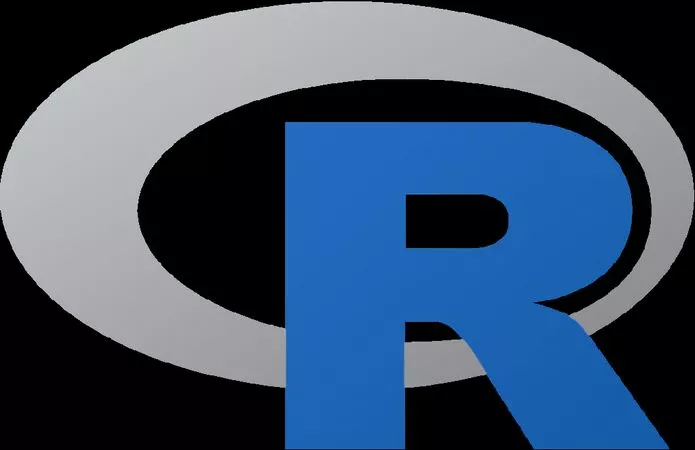

Aulas particulares professor Ajax

Python

Python é uma linguagem de programação de alto nível, ou seja, com sintaxe mais simplificada e próxima da linguagem humana, utilizada nas mais diversas aplicações, como desktop, web, servidores e ciência de dados. Saiba mais sobre ela, sua origem e principais vantagens neste guia para iniciantes.
Java

O Java foi criado pela Sun Microsystems, em 1995 e, em 2008, foi adquirido pela empresa Oracle Corporation, a qual pertence atualmente. Ele consiste em uma linguagem de programação orientada a objetos, baseada em classes e que permite o desenvolvimento de aplicações pelos profissionais de TI através da escrita do código uma única vez. Seu uso pode se dar em diversos sistemas operacionais e dispositivos, desde desktops e mobile até sistemas de gerenciamento de veículos. Convém mencionar, ainda, que o Java também é uma plataforma computacional de software, composta por muitas tecnologias que se dividem entre o ambiente de desenvolvimento e o de execução.
C#

O C# é uma linguagem de programação multiparadigma criada pela Microsoft, sendo a principal da plataforma .NET. Por ser uma linguagem que suporta, entre outros paradigmas, a orientação à objetos, ela suporta conceitos comuns como encapsulamento, herança e polimorfismo. Trata-se também de uma linguagem fortemente tipada e case-sensitive, ou seja, faz diferenciação entre letras minúsculas e maiúsculas. O C# veio para facilitar o processo de desenvolvimento, tendo inúmeros recursos que proporcionam uma grande produtividade para os desenvolvedores que a utilizam.
R
A linguagem R foi criada no departamento de Estatística da Universidade de Auckland, Nova Zelândia, por Ross Ihaka e Robert Gentleman, na década de 1990. Vale dizer que o seu processo de criação foi embasado na linguagem de programação S.